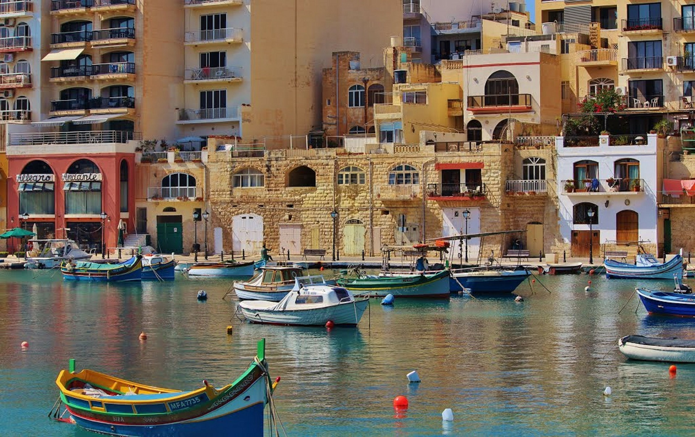
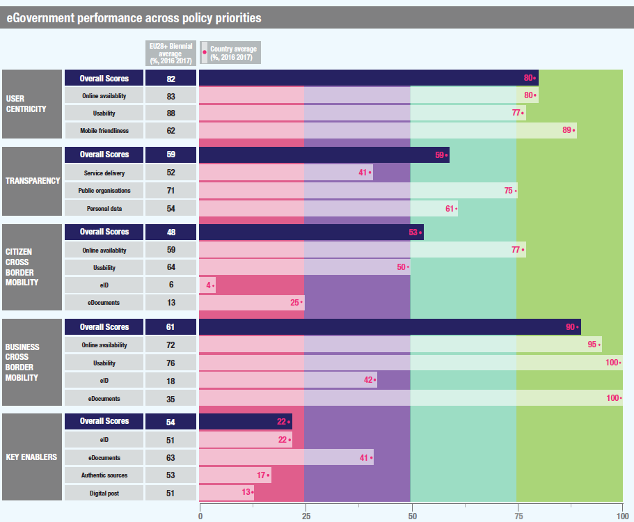
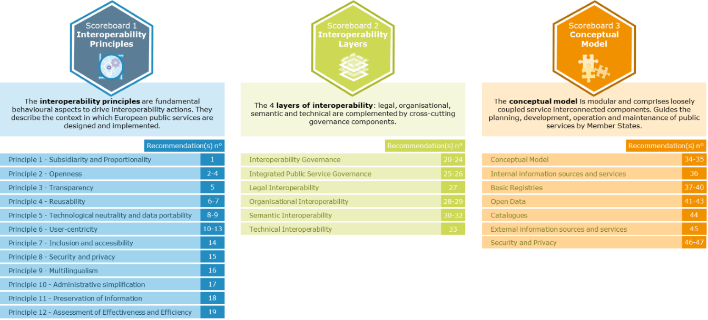

ISA2
ISA2
Digital Government Factsheet 2019
Malta
Digital Government Highlights 6
Digital Government Political Communications 7
Digital Government Legislation 16
Digital Government Governance 22
Digital Government Infrastructure 28
Digital Government Services for Citizens 37
Digital Government Services for Businesses 50
Population: 475 701 inhabitants (2018)
GDP at market prices: EUR 12 319 million (2018)
GDP per inhabitant in PPS (Purchasing Power Standard EU 28=100): 96 (2017)
GDP growth rate: 6.6% (2018)
Inflation rate: 1.7% (2018)
Unemployment rate: 3.7% (2018)
General government gross debt (Percentage of GDP): 46% (2018)
General government deficit/surplus (Percentage of GDP): +2% (2018)
Area: 315.36 km²
Capital city: Valletta
Official EU language: Maltese, English
Currency: Euro (EUR)
Source: NSO and Eurostat (last update:15 March 2019)
The following graphs present data for the latest Generic Information Society Indicators for Malta compared to the EU average. Statistical indicators in this section reflect those of Eurostat at the time the Edition is being prepared.
Percentage of individuals using the internet for interacting with public authorities in Malta | Percentage of individuals using the internet for obtaining information from public authorities in Malta |
Percentage of individuals using the internet for downloading official forms from public authorities in Malta | Percentage of individuals using the internet for sending filled forms to public authorities in Malta |
The graph below is the result of the latest eGovernment Benchmark report, which monitors the development of eGovernment in Europe, based on specific indicators. These indicators are clustered within four main top-level benchmarks:
User Centricity – indicates to what extent (information about) a service is provided online and how this is perceived.
These top-level benchmarks are measured using a life-events (e.g. mystery shopping) approach. Eight life events are included in the overall eGovernment performance score. Four of these life events were measured in 2013, 2015 and 2017 and the other four were measured in 2012, 2014, 2016, and again in 2018. The life events measured in 2017 were Regular business operations, Moving, Owning and driving a car and Starting a small claims procedure. The life events measured in 2018 are Business start-up, Losing and finding a job, Family life and Studying.

Source: eGovernment Benchmark Report 2018 Country Factsheet
Digital Government Political Communications
On 16 October 2018, the Parliamentary Secretary for Financial Services, Digital Economy and Innovation, in the presence of the Minister for National Security and Home Affairs, launched the National Cyber Security Awareness and Education Campaign.
In November 2018, the Blockchain legislations (Virtual Financial Assets Act, and the Innovative Technology Arrangements and Services Act) were put into effect.
In November 2018, the Parliamentary Secretary for Financial Services, Digital Economy and Innovation announced the establishment of a task force entrusted to design a National Strategy on Artificial Intelligence (AI).
In April 2018, the eSkills Malta Foundation embarked on the development of a National eSkills Strategy for the period of 2019 to 2021. It aims to complement initiatives at both the local and EU levels to address the need for existing and new digital skills that will be required by nearly all jobseekers in the medium-term.
In March 2019, the Government communicated its vision to develop a National Strategy related to Space. The Parliamentary Secretary for Financial Services, Digital Economy and Innovation announced the establishment of a task force which will be entrusted with the design of this strategy.
In June 2019, Prime Minister Hon. Dr Joseph Muscat launched Mapping Tomorrow – A Strategic Plan for the Digital Transformation of the Public Administration, for the period 2019-2021.
Digital Government Legislation
Digital Government Governance
The successor of Mr. Carmelo Formosa, the Head of the eGovernment and Corporate Solutions Department within MITA, is now Ms. Priscilla Bugeja.
Digital Government Infrastructure
Digital Government Services for Citizens and Businesses
March 2017 saw the launch of the first set of mobile services that included 21 mobile apps and a number of responsive websites.
The second set of mServices were launched in April 2018 followed by a successive rollout in November 2018.
Digital Malta Strategy (2014 -2020)
Digital Malta is the national ICT strategy for the years 2014-2020. It aims to provide a vision for the country to prosper as a digitally enabled nation in all sectors of society.
The core principles underpinning the implementation of the Digital Malta vision are:
Building on past and present successes, the strategy will, above all, focus on the challenges needed to address the gaps towards becoming a universally digitised society. From the citizen’s perspective this will translate in enhancing their digital capability to better and more efficiently access healthcare and social services, connect the elderly and socially excluded, improve education for all, and create higher-quality jobs. From an economic perspective digital competence and specialist ICT skills need to be widened, and national policy and strategies adjusted, to strengthen Malta's workforce and make its businesses more innovative and competitive.
Within this context, the strategy outlines three strategic themes:
The above themes are supported by three strategic enablers:
In support of this transformation, the goals are that ICT becomes the underlying infrastructure and driver behind every economic activity. ICT should make public administration more responsive, use of natural resources more sustainable, the legal and regulatory environment more business-friendly, and the SME and NGO communities more connected. Above all ICT should become an empowering tool for young entrepreneurs and a major source of impetus for the creation of more jobs and growth by Malta's key and emerging economic sectors.
The Parliamentary Secretariate responsible for Financial Services, Digital Economy and Innovation within the Office of the Prime Minister is responsible for the implementation of a Digital Economy for Malta, and has the overall governance of the eGovernment vision, strategy and associated programmes. The Parliamentary Secretariate provides leadership and has ultimate responsibility for the successful delivery of the ICT programme.
The implementation of a Digital Economy requires the involvement and collaboration of various key players and entities. Amongst these, the Malta Communications Authority (MCA) and the Malta Information Technology Agency (MITA) are considered the main actors.
Mapping Tomorrow – A Strategic Plan for the Digital Transformation of the Public Administration (2019-2021)
Mapping Tomorrow is a strategic plan for the Public Administration. The Public Administration will enter a new era of further simplification of public services to reduce the administrative burden on its clients and to have client-centred public services through digital transformation. The document sets a clear vision with well-articulated goals and an ambitious implementation plan.
Government’s vision aspires to take public services to the next level of improvement through the adoption of digital technologies. The vision is to have: A Public Administration Empowered by Digital Transformation.
This Plan does not exist in isolation but builds on previous achievements such as the drive to provide services which are available 24x7. Based on past achievements, this Strategic Plan sets three goals which build upon each other and form a continuum of improvement in service delivery.
Goals:
Take-Up;
Once-Only; and
Service of Excellence.
The first goal links to previous strategies and aims to bring simplified services which are digital end-to-end to increase take-up.
Once-only is the core goal, aiming at internal sharing and re-use of data and information that has been previously provided by a citizen or organisation. The aim is to stop asking for information which already exists within Government.
The third goal brings public services in line with social trends and demands, and to the quality levels expected by citizens and businesses. It looks at the adoption of emerging technologies such as AI to bring public services that are personalised, user-friendly and timely. The goal is to exceed client expectations.
The goals are ambitious and require a co-ordinated and collective approach from all Ministries. Stakeholders need to embrace a number of key-enabling concepts, principles, and technologies that are designed to bring the whole of Government together.
Specific concepts that are at heart of this Strategic Plan:
Client-Centricity;
One Government;
Sharing and Re-use;
End-to-End Services;
Digital by Default; and
Process Re-engineering.
Generic Principles which are to be adopted throughout this digital transformation:
Trust;
Stronger Awareness;
Security and Privacy;
Agility and Continuous Improvement;
Accessibility;
Availability;
Ongoing Investment and Celebrating Success; and
Interoperability and Cross-Border.
Adoption of Emerging Technologies in order to meet and exceed clients’ expectations:
Distributed Ledger Technologies;
Business Intelligence and Analytics; and
Immersive Technologies.
The implementation plan is based on four strategic pillars which bring different elements of the Public Administration together so that work can be co-ordinated with clear authority and responsibility.
Pillar 1: A Client-Centric Public Administration
A number of major milestones to strengthen the relationship which has been built between Government and its clients, bringing the latter closer to the design of digital services, including also those who are not so tech-savvy.
Pillar 2: Sector Specific Programmes
Services that are specific to their sectors, without detracting from the notion that for clients the Public Administration is a whole entity.
Pillar 3: Internal Solutions for the Public Administration
Empowering employees and modernising internal (user and corporate) solutions are equally important. The Plan aims to provide the Public Administration with the right tools and corporate solutions for use across Government.
Pillar 4: Technological Platforms and Solutions
Digital transformation requires a technological platform to enable the implementation of solutions. The current infrastructure will be upgraded with avant-garde technologies, giving more autonomy to Ministries in a secure environment.
Governance and Implementation
The Plan also identifies a number of governance elements for successful implementation. The advocacy of Critical Success Factors calls for a re-engineering exercise to adopt a horizontal approach; it mandates careful investment in both human capital and systems and technologies; and while it sets clear governing structures it invites further action to keep plan current.
Mobile Government Strategy 2017 – 2018
Citizens and businesses regularly came into contact with public services at various instances of their daily lives. More convenient access to public services was intended to help individuals, families and businesses to take better care of their personal, professional and commercial interests. In these circumstances, the Government aimed to pursue new and innovative ways of providing its services. Another government goal was to provide public offices with more modern and flexible means of providing personalised and value-added services to citizens and businesses, at the time and place where these services are needed. This was expected to transform the public sector into one that is more modern, agile and capable of changing its procedures as necessary to be more effective and less bureaucratic. Within this context, the Office of the Prime Minister launched its Government mServices Strategy (2017-2018), and outlined the approach being adopted to introduce public services through mobile devices, referred to as mServices.
Alongside public services already offered via the eGovernment programme, the introduction of mServices was intended to help achieve the Government’s goal of bringing public services closer to citizens on a 24/7 basis. Therefore, the vision of the Government mServices initiative was “Access to 24/7 Public Services from Anywhere".
The Strategy was based upon 11 principles:
It was generally possible to classify mServices into one or more of the four categories: mCommunications dealt with two-way communication of Government with citizens and businesses; mTransactions handled transactional services, including payments that may require user identification; mDemocracy further increased citizen participation in political decision-making, while mAdministration introduced mobile-based tools for public officers to increase their mobility and facilitate personalised public services on location.
November 2018 marked the final phase of this strategy. Whilst there were no plans for a new strategy focusing specifically on mobile initiatives, the programme continued to work in phases, with the aim of improving and creating new user-centric Government services tapping on new and emerging technologies.
At a press conference on 19 April 2018, the Principal Permanent Secretary announced the launch of 13 new mobile apps and 10 responsive websites, as well as the soft launch of an additional 10 websites. It followed an earlier event that saw the launch of the first 21 mobile apps for Government services (mServices) in 2017, as part of the implementation of the Mobile Government Strategy 2017-2018. Additionally, a communication by the Principal Permanent Secretary in November 2018 announced the addition of a further 26 new mServices which related to education, agriculture, voluntary organisations, tax, social security, judicial and law enforcement services, and which were accessed by around 90 000 online users per month.
CONvErGE Project
In 2017, the Prime Minister officially launched the CONvErGE Project with an investment of EUR 40 million, of which EUR 28.5 million were co-financed by the EU as part of the ERDF 2014-2020. Through this project, the government continued to strengthen public services through the development of its ICT systems. The aim was to create a number of new services that provided more benefits to citizens and businesses. These funds enabled the development of new systems for various sectors, namely the health, social services, justice, public finance, tourism, emergency systems and business sectors. Apart from the development of new systems, the funds were used to strengthen the government’s IT infrastructure.
Through this project, the Malta Information Technology Agency (MITA) supported Ministries in their implementation of new eService applications that included:
The national portal Gov.mt is the central source for all citizen services and governmental information, across the board, whilst businessfirst.com.mt and servizz.gov.mt are the national portals for businesses and citizens respectively.
National Identity Management System (NIDMS)
The National Identity Management System (NIDMS) provides the functionality necessary to consolidate eID Account information and seamlessly associate them with the eID, eRP and ePassport lifecycle. The solution provides Access Management to determine the access that will be granted at various levels to administrators/operators.
The NIDMS system consists of a number of distinct components operating together to deliver eID cards, eResidence cards, ePassports to applicants. The electronic cards contain qualified electronic signatures compliant to EU Regulation No 910/2014 (eIDAS Regulation)
Malta Cyber Security Strategy
Following the issue of a Green Paper for a National Cyber Security Strategy in late 2015, that led to a nation-wide consultation process during the first half of 2016, the Government of Malta launched the first National Cyber Security Strategy. The Strategy served as a framework to protect information systems, networks and information on the internet, together with the respective users of the services that they provide; namely Government, the private sector and civil society. The strategy was one of the action items proposed by Digital Malta – National Digital Strategy for the years 2014-2020. The key principles of the National Cyber Security Strategy aimed to reflect the various facets of cyber security and the essential underlying complex nature of cyber space. Under the direction of the National Cyber Security Strategy Steering Committee, MITA launched a campaign focusing on all strata of civil society to instil a culture towards cyber security awareness. The targets audience included the general public, SMEs, public sector, students and IT professionals. To achieve this, a variety of communication mediums were used, mainly social media, traditional media such as television, radio and news portals, together with a dedicated website. Activities ranged from drama via TV and theatres, training, surveys, focus groups, workshops, competitions and awards.
With regards to cybersecurity within the public sector, MITA launched an Information Security Policy that was articulated, published and communicated. This was based on ISO27001 Information Security International Standard, and that was applicable to everyone within the Public Sector. As part of this Framework, MITA started scanning all Government websites that utilised MITA’s infrastructure for the identification of vulnerabilities and subsequent rectification by the respective owners. This governance framework was extended to cover the protection of environments that migrated or were newly commissioned on MITA’s new Hybrid Cloud Enabling Infrastructure. This was an innovative project which re-designed the way MITA sought to provide assurance to its clients that the infrastructure on which Government data resided was adequately safeguarded from the ever-increasing threats defining today’s cyber space. MITA heavily invested in cutting edge technology to provide it and its clients with the ability to continuously scan for vulnerabilities and obtain real-time visibility on the operational health and security posture of environments hosted on this platform. Information Security included three main dimensions: confidentiality, availability and integrity, and involved the application and management of appropriate security measures for a wide range of threats, with the aim of ensuring sustained business success and continuity, and minimising impacts of information security incidents. (Reference ISO/IEC 27000). Additionally, MITA invested in tools to aid in the detection and prevention of cyber security incidents, including adequate training of its employees throughout the organisation, and collaboration with other Governmental Departments to ensure a centralised and cohesive approach in this domain.
The full version of the Information Security Policy can be accessed here.
Messages to the public pertaining to cybersecurity are channelled through Malta’s Cyber Security page, stemming from a national cyber security strategy that the Government had endorsed MITA to draft, subsequently followed by the Malta Information Technology Agency (MITA) 2018-2020 Strategy.
Launch of the National Cyber Security Awareness and Education Campaign
On 16 October 2018, the Parliamentary Secretary for Financial Services, Digital Economy and Innovation, in the presence of the Minister for National Security and Home Affairs, launched the National Cyber Security Awareness and Education Campaign. As stated, the Campaign which was one of the key goals of the National Cyber Security Strategy published in 2016, was based on Government’s belief in the need for all Maltese society to be fully aware of cyber risks and the security measures to be taken. The Campaign targeted the general public, the private sector as well as the public sector - as the largest holder of critical and sensitive information - through practical training and promotional initiatives.
Registry of Base Registers
The Register of Registers is a comprehensive list of legally based official lists and registers which includes all the national registers and also a section which comprises the Foundation Data Layer, namely the main Base Registers for Person, Location (Address) and Organisation, and also a set of Administrative Registers which reflect the Public Organisations and the organisational structures of the Government of Malta and also the list of Public Services.
The quality and governance aspects of the Master Data is first and foremost regulated through a new raft of specific legal notices and new subsidiary legislation under the Cap 546 of the Laws of Malta (PSI Directive transposition) with the intention to give legal basis to the data sharing and re-use both within the public administration and also beyond. These new Legal Notices shall be covering the Person Register, the Business Register and the Address Register which includes a number of subsidiary registers including Post Codes, Streets, Localities and Buildings.
eProcurement System
Malta has implemented its eProcurement System since 2011 and has now completed the transition from traditional procurement. Public Procurement Regulations passed in 2016 obliged contracting authorities to publish all procurement calls above EUR 5 000 on the eProcurement System. During 2018, one initiative embarked upon with the aim of increasing transparency was implementation of a Contracts Register. A second initiative was to simplify processes and encourage wider cross-border participation, notably implementation of the European Single Procurement Document, and its integration with eCERTIS and National Registers in the eProcurement System.
National eSkills Strategy (2019 – 2021)
Emerging information and communications technologies are assuming increasing importance in our lives. This importance is not connected solely to our professional life but also our quality of life in its entirety. Whilst ensuring that society at large develops the right competence and capability to secure a better future, the need to revisit the effectiveness of strategies leading to acquisition digital skills by individuals, society and Malta as a nation state is clear. This Strategy aims to complement initiatives at both the local and EU level to address the need for existing and new digital skills that shall be required in nearly all jobs in the medium term. The digital market will completely transform several business models that we are accustomed to. This is expected to bring major changes within the labour market in a relatively short time. Despite general positive developments in the digital literacy, the need for a continued effort to narrow the digital gap further is key to the Malta eSkills Foundation.
The digital skills strategy is formed of twelve main recommendation areas. The recommendations aim to support the business needs development of the Foundation to match the rapid pace of change led by market needs. The Strategy also aims to develop a number of measures to support a decision-making process that is more evidence based. In addition, the Strategy put forward several specific recommendations to address a number of current developing market trends identified as part of the fieldwork done over the past year.
Malta Information Technology Agency (MITA) Strategy (2018-2020)
The new MITA Strategy provided the purpose, focus and direction that the Agency adopted from 2018-2020. for the upcoming three years. It set out a vision for MITA to be “the digital driver for the transformation of Government.” With the view that transformation requires more than digital solutions, this vision placed the Agency in a position to serve as the “digital driver” to help the Public Administration to transform through the digitalisation of public services.
The Strategy introduced four corporate drivers which explained changes in the modus operandi of the organisation, and which were required to achieve the desired states set for 2020. The Agency needed to transform itself to innovate in existing core business areas and introduce new services. It had to adopt an innovative approach in which employees were given the opportunities to enhance their knowledge, apply new ideas and continuously learn and research on the application of new technologies. This enabled the Agency to spearhead the digitalisation of Public Services through a direct contribution in ICT infrastructure, solutions and outreach activities. The agency intends to work in tandem with Ministry CIOs to safeguard Government digital assets, prioritise, and align digital strategies to help Government achieve its strategic goals.
The Strategy established a clear direction with 10 desired states where the organisation aimed to be by the end of 2020, with 32 corresponding actions to lead MITA from where it was to where it wanted to be. These desired states covered the necessary focus which the Agency must embrace and tackle; ICT direction, application of new technologies, security, digital transformation, community engagement, cybersecurity, operational stability and effectiveness, focus on core, client-centric service provision and continuous human resource development. Through these desired states, the Agency aimed to go through the necessary internal changes, improve collaboration across government and bring about a holistic approach to achieve its vision of becoming the digital driver for the transformation of Government.
National ICT Interoperability Framework (NIF)
Malta has acknowledged the importance of interoperability and is working decisively towards making its public services interoperable. In the process of defining a formal National ICT Interoperability Framework (NIF), the Malta Information Technology Agency (MITA) formulated new guiding principles which brought public services one step closer to achieving full interoperability.
One of the primary goals of Malta’s NIF is to facilitate the strong vision of a connected Government through the alignment of departmental business processes and the standardisation, discovery and reuse of ICT assets. In addition, Malta’s NIF applies continuous rigour in strengthening the level of trust in services provided by the public sector.
The Government of Malta ICT (GMICT) Policy Framework is a collection of policies, directives, procedures and standards, centrally managed by MITA, governing the adoption and use of technology within the Government of Malta. More specifically, an interoperability policy is used to regulate the building blocks identified by the NIF. In addition, formalised specifications adopted by MITA are also coordinated and governed by GMICT policies. GMICT policies regulate the adoption and use of technology to facilitate the achievement of the government’s objectives
Both NIF and GMICT policies are currently undergoing an extensive review for better alignment with the European Interoperability Framework and sharing and reuse initiatives.
Scholarships on Blockchain and DLTs
On 28 August 2018, a scholarship forming part of an agreement between the University of Malta and MITA, was launched in the presence of the Parliamentary Secretary for Financial Services, Digital Economy and Innovation. The scholarship covers a EUR 300 000 fund launched by Government over a three-year period, and which shall enable students interested in pursuing their studies in Blockchain and Distributed Ledger Technologies (DLTs). This initiative is seen as a pillar in education to build upon the amount of skilled workforce that will be required to sustain the large number of DLT companies which have shown their interest in investing in Malta and which are willing to base their companies in Malta, following the country’s legislative developments on DLT.
Launch of the Emerging Technologies Lab
In October 2018, Parliamentary Secretary for Financial Services, Digital Economy and Innovation Silvio Schembri inaugurated an Emerging Technologies Lab hosted by the Malta Information Technology Agency (MITA) – Government’s IT Agency - and for which an investment of EUR 250 000 was made for its set-up and equipment. The Lab is available for MITA employees, Government employees, students, as well as private sector start-ups. It will provide an opportunity for exploration and learning emerging technologies, and also allowing for the possibility to develop related innovative approaches to data to day business operations.
Malta Government’s vision on Artificial Intelligence
In November 2018, the Parliamentary Secretary for Financial Services, Digital Economy and Innovation announced the establishment of a task force entrusted to design a national strategy on Artificial Intelligence (AI). Following the success with the Blockchain Island the Government embarked on another mission, this time for Malta to become one of the top countries in the world with the highest impact AI strategy, and to become the ultimate AI launchpad where companies and start-ups can develop, test, implement and scale their products locally and then springboard them into the world. The policy, published on 21 March 2019, was a basis for public consultation that lasted until 22 April 2019. The National AI strategy was based on three strategic pillars: Investment, Start-ups and Innovation, and the Public and Private Sector Adoption; plus, three strategic enablers: Education and Workforce, Legal and Ethical Framework and Infrastructure.
This document highlighted the vision, objectives and policy considerations to guide the development of Malta’s National AI Strategy.
No specific legislation on digital government was adopted in this field to date.
Freedom of Information Act (2008)
The Act's aim was to establish a right to information held by public authorities to promote transparency and accountability in government. Specifically, the Freedom of Information Act granted citizens more rights to access information held by the Government. The law drew upon elements of similar acts established in other countries. The Government of Malta published in the summer of 2009 Law Number 218, a commencement notice that paved the way for the Maltese Freedom of Information Act 2008 to come fully into force on 1 August 2010. The commencement notice established the Information and Data Protections Commissioner as the regulatory body (change of name and extended responsibilities), and furthermore gave all public sector bodies (including local government) one year to prepare and publish their information asset lists, as defined by the Freedom of Information Act 2008.
Re-use of Public Sector Information
Legal Notice 20 of 2007, Re-Use of Public Sector Information Order, 2007, issued under the European Union Act (Chapter 460 of the Laws of Malta), transposed into Maltese law the general principles governing the re-use of public sector information, in line with the provisions of the relevant EU Directive 2003/98/EC on the re-use of public section information.
This Legal Notice was replaced by the Re-Use of Public Sector Information Act 2015 (Cap 546 of the Laws of Malta), which transposed the provisions of Directive 2003/98/EC of the European Parliament and the Council of the 17 November 2003 on the Re-Use of Public Sector information, the provisions of Directive 2013/37/EU of the European Parliament and of the Council of 26 June 2013 amending Directive 2003/98/EC on the Re-Use of Public Sector information into national law. The new rules emphasised that, subject to specific conditions, all content that can be accessed should, by default, be re-usable. The new Act built on the provisions and the procedures already in place through the Freedom of Information Act (Cap 496 of the Laws of Malta).
eID Regulation
Malta was one of the first Member States to legislate in eCommerce by transposing the eSignatures Directive to national law in 2001. The eCommerce Act was subsequently updated over the years to maintain its applicability to the digital market context, and most importantly was overhauled in 2016 to align with the Regulation No 910/2014 on electronic identification and trust services for electronic transactions in the internal market (‘the EIDAS Regulation). Today the national legislation on eID and Trust Services is harmonious with the EIDAS Regulation, and permits Malta to benefit from cross-border authentication and digital signing in eGovernment services.
Data Protection Act (2001)
The GDPR became applicable EU-wide on 26 May 2018, and concurrently the new Data Protection Act (Cap 586) was passed through Parliament.
The Data Protection Act passed through Parliament on 14 December 2001 and came fully into force in July 2003. It was introduced in order to render Maltese law compatible with EU Data Protection Directive (95/46/EC), even though Malta was not yet an EU Member State. It outlined principles of good information/data handling to guarantee the protection of personal information. Data Controllers, such as educational institutions, employers and banks, were obliged to inform individuals of the reasons for collecting information about them. Furthermore, individuals were assured that the data collected would not be used for any other reason than for the purpose it was collected and were granted rights of access to the personal information held by the data controller. The Act provided grounds for processing personal data but made special provision for processing sensitive personal data, a sub-set of personal data, in very specific stipulated circumstances.
Under the revised Data Protection Act (Cap 586), that was enacted concurrently with the applicability of the GDPR, the Processing of Child’s Personal Data in relation to the Offer of Information Society Services Regulations was adopted by Malta in 2018.
Measures for High Common Level of Security of Network and Information Systems Order (NIS Directive)
Measures For High Common Level of Security of Network and Information Systems Order, 2018 (LN 2016 of 2018), the NIS Directive, was transposed at the national level.
Public Registry
The Public Registry is covered by the Public Registry Act, the Civil Code, the Marriage Act, Civil Unions Act, Gender Identity, Gender Expression and Sex Characteristics Act and the Cohabitation Act. According to Article 238 (1), the Public Registry Office in Malta and Gozo will keep four registry books: one for the registration of acts of birth, one for the registration of acts of marriage, one for the registration of civil unions and one for the registration of acts of death.
Vehicle Registry
The Vehicle Registry was established by the Motor Vehicles Registration and Licensing Act, Ch. 368 in the Laws of Malta.
Company Registry
The Company Registry holds information about commercial organisations in Malta. The regulation of commercial organisations in Malta is mainly covered through the Commercial Partnerships Ordinance 138 (repealed in 1995, but some sections are still applicable), the Commercial Code 139 and the Companies Act 140. The mentioned laws provide identification of commercial organisations, who is in charge of them, as well as ways to amend information in the registry.
Land Registry
The Land Registry was created with the Land Registration Act, Ch. 296 of the Laws of Malta in 1982. The Land Registration Act defined how registration areas were created (Art. 10), which documents were necessary for the registration of immovable property (Art. 12), how land was described, and how to issue Certificates of Title. The legislation prescribed to identify land in a standard way, which in turn proved a vital component in the simplification and standardisation efforts of the public administration.
Public Procurement Regulations
The new National Public Procurement Regulations were published on 28 October 2016, transposing Directive 2014/24/EU, Directive 2014/25/EU, and Directive 2014/26/EU on public procurement. Besides the substantive provisions related to public procurement, and the provisions related to purely electronic tools such as the Dynamic Purchase Systems and the Electronic Auctions, the Regulations, and specifically LN352 of 2016, provide that all procurement procedures conducted by a contracting authority shall be performed using the Government eProcurement system.
Subject to specific conditions, all communication and information exchange including electronic submission must be performed via electronic means of communication. The authority responsible for the tendering process shall by electronic means offer unrestricted and full direct access free of charge to the procurement documents from the date of publication of the notice or the date on which an invitation to confirm interest is sent.
The eInvoicing Directive 2014/55/EU was transposed in local legislation via Legal Notices 403 and 404 of 2018 that were published on 30 November 2018. The Directive mandated Central Government, Government entities and Local Councils to receive and process invoices electronically. Whilst Central Government was mandated to receive and process eInvoices by April 2019, other Government entities and Local Councils were mandated to comply with the Directive by April 2020.
As part of the process, the Ministry for Finance (MFIN), embarked on various local and EU participating initiatives. An eInvoicing Committee was chaired by MFIN with the participation of Treasury, Malta Information Technology Agency (MITA) and other local representatives of Central Government to oversee the smooth implementation of the Directive for Central Government, Government entities and Local Councils. For Government entities and Local Councils, MFIN, together with Ministry for Economy Investments and Small Businesses (MEIB), launched a National eInvoicing Forum to promote and implement eInvoicing. At the EU level, Malta participated in the European Multi Stakeholder Forum on Electronic Invoicing (EMSFEI).
Following a thorough business impact assessment of the core invoice data model as established by the European Standard, Malta adopted the Standard with no extensions. In the process, Government became an end-user OpenPEPPOL member and chose to adopt the PEPPOL BIS Billing 3.0 as the Malta CIUS with no changes. The Core Invoice Usage Specification (CIUS) was a product of the European core invoice data model enlisting country specific requirements of country data within the model. The adoption of the PEPPOL CIUS guaranteed a high degree of interoperability since several Member States adopted CIUS or based their local CIUS on PEPPOL. It means that the Government incorporated the PEPPOL CIUS in its systems and was able to receive eInvoices through the PEPPOL eDelivery network. Joining OpenPEPPOL was an important part of Malta’s strategy to support compliance with the European eInvoicing Directive (2014/55/EU), making it easier for businesses to engage with Government online.
The Maltese Government promoted the adoption of eInvoicing in its Digital Malta National Strategy 2014-2020. There is currently no eInvoicing platform in place in Malta. The Treasury Department within the Ministry for Finance (MFIN) is in the early stages of implementing a new Corporate Financial Management Solution (CFMS) across central Government alongside an eInvoicing PEPPOL compliant platform linking suppliers to the Solution. The first phase of the end-to-end supplier to Central Government eInvoicing process was expected to go live towards end of 2019.
Electronic Invoicing in Public Procurement Regulations
The electronic Invoicing in Public Procurement Regulations was adopted in 2018 by Malta (LN 404 of 2018).
Legal Notice on Justice
Through a legal notice entering into force in December 2018, the Government of Malta continued to implement further reforms related to information in the justice sector.
Filing of Acts by Electronic Means in the Land Arbitration Board Regulations
Filing of Acts by Electronic Means in the Land Arbitration Board Regulations was implemented in 2018.
Electronic Commerce Act (Chapter 426 of the Laws of Malta)
The Electronic Commerce Act provided for the application of legal requirements to electronic communications and transactions, including electronic contracts. The Act, as originally enacted, transposed into Maltese law EU Directive 1999/93/EC on a Community Framework for Electronic Signatures, plus the EU Directive 2000/31/EC on certain legal aspects of information society services, in particular electronic commerce, in the internal market. The competent regulator appointed to enforce the Electronic Commerce Act, was the Malta Communications Authority (MCA).
In 2016, this Act was amended whereby the national provisions implementing Directive 1999/93/EC were deleted or amended, and new provisions introduced empowering the Malta Communications Authority as the competent regulator to act as the supervisory body for the purposes of Regulation (EU) No. 910/2014 on electronic identification and trust services for electronic transactions in the internal market and repealing Directive 1999/93/EC. The Regulation harmonised the norms regulating secure electronic interactions between citizens, businesses and public authorities in order to ensure that, for access to cross-border online services offered by Member States, secure electronic identification and authentication was possible. This created a common understanding for the regulation of electronic trust services such as electronic signatures, electronic seals, time stamp, electronic delivery service and website authentication.
Electronic Filing of Official Documentation
The Electronic Filing of Official Documentation is necessary for processing by the Public Administration and Judicial Authorities.
From a judicial process point of view, the possibility to submit judicial acts by electronic means commenced in 2013 in the Small Claims Tribunal. This was followed in 2015 for acts filed with the Administrative Review Tribunal and in 2016 for judicial letters filed with the Courts of Malta and Gozo. Since 2015, summons issued by the Commissioners for Justice could be serviced through electronic mail. In August 2017, the necessary regulations were issued for the electronic filing of applications in the Court of Magistrates:
The electronic filing of official documentation necessary for processing by the public administration has progressed steadily. An early example of filing by electronic means was Article 239 of the Civil Code which followed on the electronic signature reforms introduced through the Electronic Commerce Act. Sub-article 2 was included in the Code in 2012 and provided that the copy of an Act registered in accordance with sub-article 1, and transmitted to the Director by any electronic means, or any true copy thereof, shall be deemed a true and authentic copy for all purposes of law provided this copy was signed by the Director receiving it. In 2016, the electronic submission of income tax related documentation was consolidated and updated through Legal Notice 284 of 2016 (Electronic Communications Rules 2016).
Distributed Ledger Technology (DLT) and Innovative Technology Regulation
In July 2018, three new DLT Acts to regulate the industry were unanimously approved by Parliament. They included the:
The MDIA Act provided for the establishment of the Authority (MDIA) to certify innovative technologies and introduce a new level of communication between national competent authorities. The MDIA plays a vital role in promoting government policies that favour the development of Malta as a centre of excellence for technological innovation by implementing the best standards in the sector to position Malta at the forefront of technological innovation and create a cutting-edge hub for the digital economy. The MDIA acts as a conduit for the development of new economic sectors, whilst working in tandem to support other National Competent Authorities such as the MFSA and the MGA, from a technological perspective.
The MDIA’s regulatory regime, the Innovative Technology Arrangements and Services (ITAS) Act, dressed up the technology making sure it meets criteria for safe use and an element of accountability. The ITAS Act facilitated the regulatory framework required for the MDIA to operate, in terms of review and assessment of requirements of legality, integrity, transparency, compliance and accountability of the related technology arrangements.
The MDIA published a set of guidelines after holding numerous meetings with businesses, technologists, policy makers and a multitude of different professionals which came into force on 1 November 2018. This was the general course of action which the MDIA also planned to take in the future for other initiatives in order to accommodate the ever-increasing pace at which technology is updated and developed. To maintain an overall consistent level of effectiveness, this required the adoption of a mindset which was both open to change when required and was quick to react when such a change was needed. It was for this reason that the MDIA had a unit with the main aim of keeping an eye on emerging technologies and developments which may very often prompt the need to update relevant guidelines.
The MDIA was a key player in establishing Malta as the Blockchain Island, the first jurisdiction to come up with a regulatory framework that made it possible to certify innovative technology. The MDIA set new technological standards that were not available anywhere and were aimed at instigating innovation.
The MDIA issued the accreditation of the first Systems Auditors (SAs) which applied for registration on 3 April 2019. The accreditation of SAs served as a seal of approval that certified they were fit and proper, and had the necessary technical skills, aptitude, capability as well as experience, to handle systems audits related to Innovative Technology Arrangements (ITAs).
A SA is a service provider under the ITAS Act. Accredited Systems Auditors carry out system reviews and come up with an opinion on the management, security and functional correctness of ITAs. The SAs abide by the guidelines and control objectives published by the MDIA. These objectives are designed with the aim to assist the SA through an Audit Framework for ITAs. Furthermore, they build upon five key principles: security, processing integrity, availability, confidentiality and protection of personal data. It is through such certification by MDIA, which although not mandatory on the applicant, that a new service to operators is being provided, giving them the additional peace of mind.
The opinion of the Systems Auditors is key for the MDIA to issue certification to ITAs. ITA Applicants may approach the MDIA, on a voluntary basis, to certify their products to promote them to the world that they are fit for purpose and meeting the standards of the MDIA. Through certification the Authority aims to foster safer usage and protect users of innovative technology and thus more adoption, whilst at the same time increasing the prospects for investment in innovative technology and therefore, creating solid opportunity.
Further details on the established MDIA can be found on https://mdia.gov.mt/ . The Virtual Financial Asset Act establishes the regulatory system for the Malta Financial Services Authority to manage the Virtual Financial Assets Market.
National eGovernment
eGovernment in Malta falls under the remit of the Office of the Prime Minister (OPM). The development and implementation of eGovernment policy is coordinated centrally by the Office of the Principal Permanent Secretary. The strategy is developed with broad stakeholder involvement; services are delivered through a mix of in-house and trusted third parties serving as service-delivery agents and implementation is done in a decentralised manner through Ministerial Chief Information Officers (CIOs).
Malta Information Technology Agency (MITA)
MITA, which falls under the remit of the Parliamentary Secretariat for Financial Services, Digital Economy and Innovation within the Office of the Prime Minister (OPM), was established in July 2008. MITA is the central driver of the Government’s Information and Communications Technology (ICT) policy, programmes and initiatives. MITA’s role is to deliver and implement the assigned programmes as set out in the Digital Malta National ICT Strategy 2014 - 2020, and as directed by the Parliamentary Secretariat for Financial Services, Digital Economy and Innovation from time to time. MITA manages the implementation of IT programmes in Government to enhance public service delivery and provides the infrastructure needed to execute ICT services to Government. MITA is also responsible for propagating further use of ICT in society and economy, and to promote and deliver programmes to enhance ICT education and the use of ICT as a learning tool.
Malta Information Technology Agency (MITA)
MITA serves as the central driver and coordinator of the ICT policy in Malta by becoming the means through which the Government determines its ICT priorities. Thus, MITA prioritises national ICT targets, and embraces open standards and technologies as a matter of policy. Its main strategic goals are to deliver and manage the execution of all programmes, to serve as the central driver of information and communication technology policy, programmes and initiatives in Malta, to promote and deliver programmes aimed at enhancing ICT education and the use of ICT as a learning tool, and to proliferate the further application of information and communication technologies in society and the economy.
The Agency is dedicated in assisting the Government in transforming technological innovations into real business solutions. Its unique approach combines an innovative array of ICT and project management services with focused delivery capabilities using tried and tested methodologies to help fulfil Government’s strategies and projects and maximise the benefits of investment in technology.
Parliamentary Secretariat for Financial Services, Digital Economy and Innovation
The Parliamentary Secretariat for Financial Services, Digital Economy and Innovation within the Office of the Prime Minister (OPM) coordinates the development and implementation of eGovernment policy in the sense that both Malta Information Technology Agency (MITA) and Malta Communications Authority (MCA), the two eGovernment executive agencies, fall under the Parliamentary Secretariat’s portfolio.
| Mr. Silvio Schembri Parliamentary Secretary for Financial Services, Digital Economy and Innovation
Contact details: Parliamentary Secretary for Financial Services, Digital Economy and Innovation Office of the Prime Minister, Auberge de Castille, Valletta VLT 1061 E-mail: silvio.schembri@gov.mt Source: http://www.opm.gov.mt |
The Digital Malta Governing Board allows for strong governance which in turn supports the country’s political leadership. The Governing Board is entrusted to enable management of the dependencies and interactions between players and mitigate the risks associated with adopting different policies and implementing various actions. The Governing Board represents primary stakeholders and reports to the Parliamentary Secretary responsible for Financial Services, Digital Economy and Innovation.
Malta Information Technology Agency, MITA
MITA implements IT programmes in Government to enhance public service delivery and provides the infrastructure needed to execute ICT services to Government. MITA officially took over the operations of MITTS Ltd, with an extended role to cover projects and services on a national scale. MITA continues to excel in providing ICT infrastructure and services, professional project management and consulting services to the Government.
eGovernment and Corporate Solutions Department, MITA
The eGovernment and Corporate Solutions Department (ECSD) within MITA aims to be a leader in the provision of services and solutions that enable the implementation of a whole-of-government approach to public service delivery. ECSD creates, operates and promotes the good use of shared platforms and reusable components to transform the way government operates, from front-end to back-office, in a modern and efficient way. Furthermore, the department provides government back-office solutions that improve efficiency and effectiveness through standardisation of activities and procedures, provides a holistic and integrated view to senior public officials and maximises the economies of scale.
ECSD is organised into seven functional units being Core eGov Programme, Corporate Finance Programme, Digital Transformation Programme, Internal Systems Support, Mobile Government Programme, and the Payroll & HR Programme.
| Ms. Priscilla Bugeja Head – eGovernment & Corporate Solutions Department - Malta Information Technology Agency (MITA)
Contact details: Malta Information Technology Agency (MITA) Gattard House, National Road Blata l-Bajda HMR 9010 Tel.: +356 2123 4710 Fax.: +356 2123 4701 E-mail: priscilla.bugeja@gov.mt Source: https://www.mita.gov.mt/en/ |
Programme Management Department, MITA
The Programme Management Department (PMD) within the Malta Information Technology Agency (MITA) is committed to delivering digital services that are first-rate by implementing a sound architecture, driven by real business transformation and software development excellence, and resulting into digital services and mission critical systems having a more modern technological footing.
PMD is organised into several Programme Units, some of which are focussed on Internal Bespoke Development of Solutions and others on Project Management, Consultancy and Contract Management, Procurement and Implementation of procured solutions mainly Health, Funding, Customs, Justice and Home Affairs, Land and Public Registry, Social Policy and Taxation.
| Pierre Vella Head - Programme Management Department – Malta Information Technology Agency (MITA)
Contact details: Malta Information Technology Agency (MITA) Gattard House, National Road Blata l-Bajda HMR 9010 Tel.: +356 2123 4710 Fax.: +356 2123 4701 E-mail: pierre.vella@gov.mt Source: https://www.mita.gov.mt/en/ |
Malta Communications Authority (MCA)
Since July 2008, the MCA has been responsible for the direct implementation of the actions to upgrade Malta’s external ICT environment, to eliminate the digital divide and to promote eCommerce. In 2014, MCA’s legal mandate was extended to promote and facilitate ICT-driven innovation. The MCA is placed under the leadership of the Office of the Prime Minister. MCA’s work aims to facilitate the development of an environment that is conducive to investment, innovation, social inclusion and economic growth.
| Jesmond Bugeja Chief Executive Officer – Malta Communication Authority
Contact details: Malta Communications Authority Valletta Waterfront, Pinto Wharf, Floriana, FRN1913 Tel.: +356 2133 6840 Fax.: +356 2133 6846 E-mail: info@mca.org.mt Source: http://www.mca.org.mt |
Government Departments and Officially Appointed Bodies
Government Departments and Officially Appointed Bodies are responsible for the implementation of the eGovernment projects and initiatives falling under their respective jurisdiction.
Malta Communications Authority (MCA)
The MCA is the statutory body responsible for the regulation of the electronic communications sector (telecommunications, radio communications and broadcasting transmission), eCommerce, eSignatures, eInclusion, eBusiness and the postal sector. The MCA’s mission, mandate and functions derive from the Malta Communications Authority Act (Cap 418). The MCA is the National Regulatory Authority (NRA) for these sectors in accordance with EU law as transposed into Maltese legislation.
Management Efficiency Unit (MEU)
The Management Efficiency Unit (MEU) is constituted as a separate organisational entity within the Office of the Prime Minister (OPM) and is primarily tasked with Policy Review initiatives and generally assisting Government Ministries and Departments in the development and implementation of effective change management strategies intended to lead to improved Government Services.
In delivering its remit, the Unit works closely with and through the public administration to ensure that corporate principles and procedures are applied consistently throughout the public sector and that Ministry key performance indicators are met. Furthermore, MEU operation level reviews also directly/indirectly contribute to strengthening the eGovernment service portfolio, design and/or performance.
The Department of Information manages the Government portal and the Public Service intranet.
The Government of Malta remains committed to simplifying the processes of the public administration for the benefit of citizens, businesses and the public administration management and staff, without affecting public interests. Work has been progressing steadily in a number of areas such as:
Office of the Principal Permanent Secretary
A cohesive effort spearheaded by the Office of the Principal Permanent Secretary through the Data Governance Council brought together a number of significant stakeholders to establish the operational and legal requirements for setting upon the first base registers, the person register and the address register. These are important steps towards the aim to instil the much sought once-only principle within the Public Administration.
National Audit Office of Malta
The National Audit Office’s mandate consists of the full annual financial and compliance audit of all Government Offices and other public entities. Its mandate was extended to cover independent advisory and investigative powers, the examination of any financial matter concerning the use of public funds, and the performance/value for money evaluation audits of Government Offices, public entities and companies where the Government is a majority shareholder.
Office of the Information and Data Protection Commissioner
The Office of the Information and Data Protection Commissioner is tasked with ensuring that the respect of the individual’s right to privacy with regard to personal information is upheld, and the enforcement of the relevant legislation in accordance to Data Protection legislation.
The Government considers Local Government as a main vehicle to attainment and promote Digital Services at a local level. In view of this, Local Government aligns its policies to the National Digital Strategy 2014 – 2020 with the aim of offering accessibility to technology and service delivery via the front offices of Local Councils. To achieve strategic alignment, Central Government through the Local Government Division provides the necessary technical support to Local Councils with a view to attain the Strategy’s objectives.
Department for Local Government
The Department for Local Government ensures that Local Councils have the legislative authority to respond to local needs and offers administration management. It also acts as a stimulant to the devolution and decentralisation processes. Furthermore, it now serves as a regulatory mechanism for Local Councils’ operations.
The Government considers Local Government as a main vehicle to attainment and promote Digital Services at a local level. In view of this, Local Government aligns its policies to the National Digital Strategy 2014 – 2020 with the aim to offer accessibility to technology and service delivery via the front offices of Local Councils. To achieve strategic alignment, Central Government through the Local Government Division provides the necessary technical support to Local Councils with a view to attain the Strategy’s objectives.
Department for Local Government
The Department for Local Government ensures that Local Councils have the legislative authority to respond to local needs and offers administrative support along with statutory funding to 68 Local Councils. It also acts as a stimulant to the devolution and decentralisation processes.
Master Data
The quality and governance aspects of the Master Data are regulated through a new raft of specific legal notices and new subsidiary legislation under the Cap 546 of the Laws of Malta (PSI Directive transposition), with the intention to give legal basis to the data sharing and re-use both within the public administration and also beyond. These new Legal Notices cover the Person Register, the Business Register and the Address Register which includes a number of subsidiary registers including Post Codes, Streets, Localities and Buildings.
No responsible organisations were reported to date.
No responsible organisations were reported to date.
Portal
The portal function is a critical service for the Government of Malta, because it is the electronic interface between the Government and the public. In this regard, the Government of Malta, through the Malta Information Technology Agency (MITA) has continued to invest heavily in this sector. This was done to continue to provide the best infrastructure for the hosting of the Government’s public facing portals. A new portal hosting platform was launched in 2019. The new platform is based on Microsoft SharePoint 2016 and aims to offer an out-of-the-box solution to the Government for the address of non-standard branded sites.
The Government also fully upgraded the Gov.mt portal with a new brand. This site will soon be migrated to the newly set up infrastructure described referred to before. The Government portal, www.gov.mt, is an institutional site providing comprehensive and meaningful information on Government ministries, policies, services. The upgrade to the gov.mt portal triggered an exercise to consolidate the entry point for all electronic forms onto the Servizz.Gov portal. Through the Servizz.Gov portal, citizens can also submit queries, suggestions and complaints to public entities regarding the services they offer, report excessive bureaucracy and request information.
Traditionally the gov.mt portal served as an entry point for service delivery, i.e. service directory. Through this change, the entry point for all government service delivery has now been consolidated under the servizz.gov.mt portal. The latter was enacted as the one-stop shop for public interfacing services, and for which it won the Service Design Award at the Service Design Global Conference in 2017. Now, the Government of Malta has consolidated all its public facing services into one portal categorised under specific Super Sectors, Sectors and Functions. This categorisation enables the public to pinpoint the required electronic service with ease, thus reducing the time for a person to avail of a service.
This also means that the former eForm landing pages were also consolidated within the Servizz.Gov portal in a homogenous and consistent manner. The latter portal would in turn call the eForms platform to load the various services that the public would require. The forms on the eForms platform enable information to be collected once at source and are subsequently electronically distributed to the respective Government entities. The eForms platform is also integrated with other electronic services, namely the Government Payment Gateway (GPG), electronic identity (eID), SMS notifications and Microsoft Exchange for email notifications.
www.gov.mt Portal
The Government of Malta's portal is an institutional site providing comprehensive and meaningful information on Government ministries, policies and services. Government services and information are structured according to the needs of specific citizen groups/events. An A to Z list of Government websites can be accessed through the portal. In late 2018, the gov.mt website and the sub site doi.gov.mt, were reorganised and relaunched with a new brand. Since the primary objective of the gov.mt website is to be the Government of Malta primary facing website to the world, the role of gov.mt being the central website for Public Administration services was taken over by servizz.gov.mt.
Servizz.Gov.mt website
Servizz.Gov Agency is the Government’s One Stop Shop for the general public, and www.servizz.gov.mt is now the central website for all Public Administration services. Through this website, citizens can look up services categorised under 12 super sectors. The scope of establishing such sectors was to simplify the categorisation of services, since now they are linked to a sector which is not bound to change, rather than to a specific Ministry which is highly subjective to change. The website also offers the possibility for citizens to report complaints and excessive bureaucracy, offer suggestions and request information. A customer relationship management system is the infrastructure of the IT system where all cases are processed against service level agreements and investigated in the most efficient manner. Services currently provided on www.mygov.mt will feature on www.servizz.gov.mt.
Government Intranet for the Public Service
MITA also offers a collaborative platform that is also based on Microsoft SharePoint for document management, collaboration and intranets. This platform is widely used within Government but most notably it is used for the Government Intranet for the Public Service – intra.gov.mt. The Intranet for the Public Service is available to all government department/entities and their employees. Intra.gov.mt, through a collaboration site, provides any participating government department/entity the facility to share between each other activities such as document management and workflows that address the department’s/entity’s internal business requirements. It holds information like circulars, news, events, directives, newsletters, vacancies, management resources, courses and scholarships and is restricted to public service officials.
Data Protection Portal
This portal accessible through the Government Intranet came into operation in February 2006, and enabled Data Protection officers to have access to guidelines and templates to ensure that Government processes are compliant to the GDPR. As of May 2018, the Data Protection Unit within the Ministry for Justice, Culture and Local Government (MJCL) took the decision to open up this portal to all officers with access to the Intranet so that all guidelines were available to all and not limited to Data Protection Officers.
Judiciary of Malta Portal
The portal of the Judiciary of Malta provides the public with extensive information resources on the Maltese Judicial System, the Judiciary, the Judges and Magistrates, as well as the courts they sit in. It offers a latest news section and an insight on the history of the Maltese Judiciary and the important judgements that have taken place.
Local Councils portal
The Local Government portal aims at providing holistic information about the Local Government in Malta. With a view to empower the role of local councils and assist citizens in easily accessing the councils' services, a dedicated sub-portal provides information specific to individual Local Councils and Regional Committees. The main objectives for the creation of this web portal were to encourage local councils to effectively interact with the community in general and to provide international users with a valuable tool allowing them to better understand the geo-cultural composition of the Maltese Islands, with their different specificities that prevail in each locality. The portal also promotes the advantages of standardisation, opening the channels of locality-based prioritisation and differentiation.
eCourts Portal
Improvements on eCourts portal were made to provide more services online both for citizens and for legal professionals, including new modules for Civil Cases and Judgements and a Judicial sales component. Work is in progress on a new Legislation website based on Electronic Legislation Identifier (ELI) standards, which together with a content management system will eventually digitise the workflow from the drafting stage to publication. Work on an Electronic System for the online provision of Notarial Acts continued; the system launched in 2019. Work on a Technology refresh of the Malta Courts of Justice Network infrastructure continued through 2019. By the end of 2019, all computers at the Courts of Justice were expected to be modern computers with at least i3 processors.
The Kultura.mt portal acts as both a cultural calendar for all public cultural events, as well as providing a common online ticketing platform for all Public Cultural Organisations, providing a harmonised user experience to customers.
myHealth Portal
The national myHealth portal gives patients and doctors they choose to link with access to specific electronic health records. The following data can be accessed: Case Summaries (inpatient discharge letters from 2008 onwards for Mater Dei Hospital and other government hospitals); pharmacy of your choice medicines entitlement, prescription and dispensing records; laboratory results and medical image reports; vaccination records; future outpatient/clinic appointments at government hospitals and health centres; copies of notifiable infectious disease forms sent by doctors through myHealth. Functionality for online ordering of lab tests and medical images by private doctors has been added to the myHealth portal.
Use of the portal has grown steadily, with more than 64 000 patients now linked with doctors through myHealth.
In 201,8 a new recruitment portal featuring the Public Service website design was launched. This new responsive website replaced the previous legacy recruitment portal which was later decommissioned following an extensive back up process. A mobile app titled Join the Public Service, which is connected to the new recruitment portal, was launched in mid-2018. Its aim was to alert the general public about job opportunities related to areas of their interest within the Public Administration.
Malta is the European leader in NGA broadband access as confirmed through European DESI reports. The Malta Communications Authority plays an important role in facilitating and nurturing a healthy and competitive business environment and infrastructure-based competition.
MAGNET was implemented in 1995 as the Maltese Government Network that connects all Government Ministries, Departments and Agencies, as well as Local Councils, Police Stations, Libraries, Hospitals, Health Centres, Social Services offices and Embassies. This network enabled the Government to proliferate IT and information society applications such as email, the Internet, and corporate applications like the Common Database (CdB) and the Departmental Accounting System (DAS), to help facilitate and improve the efficiency of the Public Service. The availability of this network enabled the Government to launch its eGovernment services. A new network, 'MAGNET II', was launched in July 2005 and partly replaced MAGNET. This new state-of-the-art network presented a number of benefits for users compared with its predecessor. In particular, MAGNET II provided enhanced bandwidth per site, offered better reliability through strict service level agreements (SLAs), guaranteed 99.8% minimum site availability and was fully secure through extensive encryption.
In 2015, the MAGNET III was launched to provide cost effective connectivity services to Government. By the end of 2016, all MAGNET II sites migrated to the MAGNET III infrastructure. Whilst retaining the strongholds of the MAGNET II, the MAGNET III infrastructure offered flexible bandwidths in accordance to client business needs. Another major benefit of MAGNET III was the network’s ability to transport Voice over IP (VoIP) calls efficiently and effectively between all connected organisations. A Government-wide intranet became available to all entities connected to the network. Malta Public Service Intranet allowed document exchange and sharing across Ministries and Departments. During 2018, thirty-five new MAGNET III sites were commissioned.
Various initiatives were carried out across the Maltese government network infrastructure over the past 12 months. One of the major initiatives was the upgrade of the core Government network.
Government Core Network Upgrade
Malta’s Information Technology Agency (MITA) core network infrastructure is the junction through which all network traffic originating from any government remote site gets transported to its intended recipient. The core network infrastructure is a fundamental building block on which MITA can provide a wide variety of government services.
An important consideration as part of this upgrade was ensuring that performance would be significantly increased to have the required capacity for various upcoming government projects whilst at the same time ensure that reliability and availability of the infrastructure would not be compromised. As a result, all network components within the core infrastructure that spans across MITA’s two Data Centres were upgraded to support the various devices that demand bandwidth utilisation well in excess of 10Gbps.
Maltese Government Common Database
The Maltese Government Common Database (CdB) was enhanced with some minor amendments. An ongoing effort is being done for the simplification of processes by internally sharing data and re-use previously gathered information, in line with the Once-Only Principle.
National Data Portal
A beta version of the Portal was soft-launched in April 2019. It enabled a shared data management platform for the finalisation of the Administrative Registers which will eventually serve as the backbone for all data governance services.
Cybersecurity Digital Service Infrastructure (DSI)
The Cybersecurity Digital Service Infrastructure (DSI) is underpinned by the European Strategy for Cybersecurity: it provides an information sharing platform ("MeliCERTes") facilitating operational cooperation among Computer Security Incident Response Teams (CSIRTs), as well as funding for CSIRTs to effectively take part in its activities.
It implements the following activities:
Establishes a direct access point between CSIRTMalta (a national CSIRT) and MeliCERTes. The other beneficiaries - MT-CSIRT and CIS - will share information through CSIRTMalta;
Increases the preparedness of CSIRTMalta, CIS, and MT-CSIRT for the requirements and tasks arising from the NIS Directive, including training of beneficiaries' personnel.
The Action is in line with Malta’s National Cyber Security Strategy.
Notifications Service
As part of the eGovernment strategy to enhance citizen communication, the Government of Malta invested in an eGovernment Shared Service (eGSS), the Notifications Service, to enable a one-way communication channel between Government, citizens and businesses. The Notifications Service provides a gateway for messaging for both SMSs and emails, allowing citizens to be notified on various Governmental services instantly.
Through its web-based portal, it gives complete access to Government Ministries/Public Entities’ clients and administrators to send notifications, either individually or in bulk, via SMS and/or Email, to citizens and businesses. In 2018, on average, the Notification service was used to send approx. 330 000 SMS messages per month spread over 110 services spanning various Government Departments and Public Entities.
EIDAS Node
In 2018, Malta was one of only four Member States that successfully met the regulatory deadline for the recognition of other Member States’ eID schemes under the EIDAS Regulation. As the operator of Malta’s EIDAS Node, MITA was successfully certified following a TickITplus ISO9001 and ISO27001 audit, and the Node was set in full production mode in July. The German middleware was successfully integrated in the environment in September, enabling the mandatory recognition of the notified German electronic identity scheme. This placed Malta as one of the top-running Member States in the adoption of the EIDAS Regulation and facilitates the early development of cross-border services. In 2019, plans will be made for such services also in the context of the Single Digital Gateway initiative.
National Identity Management System (NIDMS)
The existing National Identity Management System aims to support the core identity management processes including the issuance of electronic identity cards (eID Card), ePassports, biometric visas and residence documents. The Government operates a number of identity management systems, the most important of which are: core database systems, electronic identity (e-ID) infrastructure, an electoral system, a national identity card system and the passport system. However, it should be noted that these and other disparate information systems are not entirely interoperable.
Electronic Identity (eID)
To keep the eID solution secure, robust and stable for eGovernment service continuity, in 2014 the Malta Information Technology Agency (MITA) approved a technology upgrade for the solution that included a migration to a newer and fully supported hosting platform, and an alignment of the software development platform to recent versions. The technology upgrade included the first phase of simplification of the authentication mechanism through the introduction of a new Single Sign-on screen for a harmonised user experience and additional security. In parallel, several high-level consultations were held to discuss the potential successive phases of simplification.
The technology upgrade for the eID solution was completed in 2016. The migration to the new environment resulted in a noticeable improvement in performance and stability and was achieved with no disruption to the subscribers and the relying parties. The new Single Sign-on screen was also launched, following a complete re-engineering of the user interface and functionality to achieve the desired simplification. This simplification in the user experience was accompanied by a complete overhaul of the registration and activation processes where the reliance on the PIN letter was removed in favour an electronic activation process. Several eGovernment services, notably Servizz.Gov, eforms, myhealth, taxation, ARMS and social security have since lined up to integrate with the new screen to achieve the desired outcomes.
In 2017, MITA completed the final phase of the simplification of the eID authentication mechanism which envisaged an alignment of the assurance levels to achieve a Basic Assurance level using the eID Account and password, and a High Assurance level using the ID Card and PIN. This provided a better choice of usability or security for subscribers and relying parties. The Basic Assurance level was intended to have a password with reduced mandatory complexity with an optional one-time password. The High Assurance level potentially involved additional usability challenges in view of the initial set up and installation of the ID Card, but still provided the additional security required.
In 2018, Identity Malta together with MITA addressed the priority technical gaps of the eID system with the GDPR.
In 2019, an optional two-factor authentication mechanism for eID based on a Time-based One-Time Password (TOTP) mechanism was introduced, intended for specific eGovernment services which require a substantial level of assurance. Support for the OpenID Connect Protocol to facilitate better access from native mobile applications was also introduced. Identity Malta together with MITA are now working on introducing a new personal dashboard for eID in 2020 which will allow subscribers to manage all their functionality from one location. The dashboard will be based on a latest generation user interface which will be responsive and accessible.
The achievements made and on-going work on the eID system mean that the Government has a stable and reliable platform for electronic authentication to enable eGovernment services at a local level, with different levels of assurance providing the required choice between usability and security. Future initiatives will include notifying the Malta eID scheme/s under the EIDAS Regulation to facilitate cross-border authentication with other Member States.
Electronic Identity Cards (eID Card)
The eID Card is an identity card which in addition to the traditional identification features also includes an electronic component which allows the citizen to access an array of electronic services provided by the Government and other third parties.
Maltese nationals who are 14 years of age and older are entitled to an eID Card. The card’s electronic features are available to all card holders with one exception: the signature certificate is only available to citizens 18 years and older.
Residents who are not Maltese nationals, yet who are eligible for a residence document or residence permit, will have through electronic documents the same eID features as the eID Card. Specifically, EU nationals, spouses of EU nationals and regular third country nationals residing in Malta have the same eID features and accesses as Maltese nationals.
The electronic chip of the eID card holds the same biographic data that is visible on the face of the card, including a digital image of the citizen. The chip includes two digital certificates for authentication and signatures, and applications for ticketing and electronic purse.
The digital certificate for authentication enables the citizen to log in securely to the eGovernment services. The digital certificate for signatures is an enabler for electronic signatures. These are qualified certificates under the eCommerce Act and the electronic signature will be equivalent to a hand-written signature. Both certificates are protected by different Personal Identification Numbers (PINs).
The eID Card can be used by citizens to securely access their health information through the eGovernment services, but does not hold any sensitive health data on itself. An eID account is required to access health information through the myhealth.gov.mt portal. No fingerprint biometric data is held on the eID Card and it does not replace the Voting document issued by the Electoral Commission.
ePassports
Passports issued as from the 1 October 2008 are all e-passports. These 1st generation electronic passports had a BAC (Basic Access Control) chip. Biometrics captured were photo image and signature. As from 1 July 2010, the e-passports’ chip upgraded to EAC (Extended Access Control). Fingerprints were added to the biometrics captured.
On 30 March 2015, the e-passports’ chip upgraded to SAC (Supplemental Access Control). The same biometrics were captured, however, as the chip is the latest third generation to date.
The main reasons that led to the introduction of an e-passport were to;
Help fight passport fraud;
Reduce passport forgery;
Facilitate more robust border controls; and
Establish a link with the lawful owner.
Electronic Public Procurement System (ePPS) platform
The eProcurement Solution procured by the Government of Malta is the ePPS (electronic Public Procurement System) platform which is supplied by European Dynamics S.A. The platform was launched in July 2011 to facilitate the Maltese Government’s transition to online procurement, covering the full lifecycle of public procurement. The Solution constituted an eProcurement platform that comprised a core and a number of eProcurement-specific services, offering several parameterisation capabilities for meeting the exact needs of a Purchasing Authority.
The eProcurement solution enables actual tender bids to be submitted securely online using the most common procedures such as the open procedure and framework agreements as well as other more specific procedures such as negotiated procedure, competitive dialogue, restricted and concessions. The system also caters for new and unique procedures such as eAuctions and Dynamic Purchasing System. All procedures can be either evaluated using the lowest price, cost or best price quality ratio mechanism. The platform is currently used by the Department of Contracts, the Ministerial Procurement Units which represent different Contracting Authorities within that Ministry and individual Contracting Authorities that form part of the public sector.
Department of Contracts portal
Since the launch of the eProcurement platform for Malta, the Department’s portal has taken a different role. Rather than being an interactive site for economic operators to learn about and participate in tender opportunities, it now serves as a window for procurement regulations and policies across Government. Essentially, all the Public Procurement Regulations, Contracts Circulars, Procurement Policy Notes (PPNs) and Manuals of Procedures are available to all. Furthermore, there are also links to all the tenders published between 2008 and 2012 when the National eTenders portal took over as the site for tender opportunities and other procurement resources like awards (1999-2017) plus the Department’s annual reports on the workings of the GCC.
No particular infrastructure in this field was reported to date.
ePayment gateway
The eGovernment electronic payment gateway is part of the horizontal infrastructure supporting the Maltese eGovernment. It complements the electronic identity (eID) framework in providing a layer for the development of eServices to both Citizens and Businesses. The service is provided both as standalone, hence portals or mobile applications that directly integrate to the gateway or through other set platforms, such as eForms.
The service grew from a mere 7 600 transactions in 2003 to 650 000 in 2018, a year that saw EUR 103 million in terms of transactions or an increase of more than EUR 5 million over the previous year. The setup offers stability and security. Its contracted availability is 99.85% per month and handles eight transactions per second. In the past 12 months, the Government of Malta continued to strengthen this vital setup through the following initiatives:
This was done to continue to instil trust in the payment gateway with the aim to increase uptake and usage.
My Personal Kiosk
My Personal Kiosk is the mAdministration service launched in 2018 to provide Public Service employees with the opportunity to access their leave balances (sick and vacation), view their payslips and FS3 for the last 3 years. Additionally, employees can check their basic HR details as currently available at People & Standards Division. The service is sourcing information from the backend HR and Payroll systems.
The Malta Public Service Intranet: Intra.gov.mt
The Intranet for the Public Service is available to all government department/entities and their employees. Intra.gov.mt, through a collaboration platform, provides any participating government department/entity the facility to share between each other activities such as document management and workflows that address the department’s/entity’s internal business requirements. Amongst others, the intranet holds information such as circulars, news, events, directives, newsletters, vacancies, management resources, courses and scholarships and is restricted to public service officials. All the mAdministration services launched in 2018 are included on the intranet.
Deployment of cross-border eHealth services
The CEF funding for the eHealth Digital Service Infrastructure (DSI) supports actions to set up the necessary infrastructure for the exchange of health data across national borders within the EU and for the provision of interoperable eHealth services.
It supports Malta’s efforts to be part of this secure peer-to-peer network allowing the exchange of Patient Summaries (PS). This service will be approved and deployed according to the following release plan.
The system developed during the implementation of this service will be connected to the PS national infrastructure. At the end, Malta will be ready to take part in the EU-wide exchange of Patient Summary through the National Contact Point for eHealth (NCPeH).
Contracts Register
The Maltese Government has embarked on the implementation of a Contracts Register based on the World Banks’ Open Contracting Data Standard and also the implementation of the European Single Procurement Document (ESPD) and integration with eCERTIS and National Registers. The first is a significant statement on transparency whereas the second continues to automate processes and enshrines the once only principle.
The information in this section presents an overview of the basic public services provided to the citizens. These were identified taking inspiration from Your Europe, a website which aims to help citizens do things in other European countries – avoiding unnecessary inconvenience and red tape in regard to moving, living, studying, working, shopping or simply travelling abroad. However, the categories used in this factsheet aim to collect a broader range of information, focusing therefore not only on cross-border services, but also on national services.
The groups of services for citizens are as follows:
Travel
Work and retirement
Vehicles
Residence formalities
Education and youth
Health
Family
Consumers
Documents you need for travel in Europe | |
Passport | |
Responsibility: | Central Government, Identity Malta |
Website: | |
Description: | Citizens can download the passport application online, though it needs to be filled in by hand as per current national law. Furthermore, live enrolment is required when capturing the biometrics, and citizens must collect their new passport in person. |
Passenger rights | |
Third-Country Nationals | |
Responsibility: | Central Government, Central Visa Unit |
Website: | https://identitymalta.com/travel-rights-for-third-country-nationals/ |
Description: | Third-country nationals may enter and travel within the Schengen Area provided they fulfil the entry conditions, among others to be in possession of a valid travel document or a visa. A valid residence permit issued by a Member State also permits non-EU nationals to cross the external borders of Schengen and travel to other Member States in the Schengen area without requirement of a visa. Admission to Malta, through the external borders of the Schengen area is, therefore, only permitted to third-country nationals who satisfy the conditions of entry as provided by the legislation governing Schengen rules. As a Member State fully applying the Schengen Convention, Malta issues uniform short-stay visas valid for travelling in the entire Schengen area. |
Transport and disability | |
Accessibility | |
Responsibility: | Commission for the Rights of Persons with Disability (CRPD) |
Website: | |
Description: | The Commission for the Rights of Persons with Disability (CRPD), is a Government organisation that acts as the Independent mechanism in overseeing the implementation of the United Nations Convention for the Rights of Persons with Disabilities (UNCRPD). Its aim is to improve the quality of life of disabled persons through safeguarding their rights. The CRPD has a useful website with numerous contact details and links. It provides practical information about other organisations to assist the travellers while in Malta. |
SPOT | |
Responsibility: | Responsibility: FITA |
Website: | |
Description: | This website is used to provide information to its users in regard to accessible places, including reserved parking for Blue Badge Holders. FITA is the organisation in Malta which provides training, guidance, support to disabled people in information technology accessibility. It also audits website and mobile apps as to seek accessibility. |
EU Disability Card | |
Responsibility: | Commission for the Rights of Persons with Disability (CRPD) |
Website: | |
Description: | The EU Disability Card is a new initiative being piloted in eight EU Member States including Malta. The aim of the card is to allow people with disabilities travelling to other participating EU Member States to show they have a certified disability status in their home Member State, and to access benefits offered to people with disabilities in each Member State (including their own). Various organisations in Malta and the other seven Member States offer benefits to people with disabilities, and such website provides details of the benefits available in Malta, as well as, an online form to apply for the disability card. |
Driving | |
International Driving Permit | |
Responsibility: | Central Government, Ministry for Transport, Infrastructure and Capital Projects, Transport Malta |
Website: | http://www.transport.gov.mt/land-transport/driving/driving-abroad |
Description: | An International Driving Permit is needed for driving within countries that are not Member States or that are not party to the Geneva Convention on Road Traffic. The Maltese Driving Licence is accepted within the EU. To drive a motor vehicle in a country other than a Member State, applicants must contact the Authority for the issuance of an international driving permit in accordance with the provisions of any international convention applicable to Malta. Submissions can be done online. |
What can you take with you? | |
Malta Travel Point | |
Responsibility: | Ministry for Foreign Affairs and Trade Promotion |
Website: | https://publicservice.gov.mt/en/Pages/News/2018/ 20180216_GovernmentServicesMobile.aspx https://foreignaffairs.gov.mt/en/Documents/Intelligent Travel - EN Guide.pdf |
Description: | The Malta Travel Point App is designed to address travel-related issues. It brings services offered by the Ministry and its Missions closer to the public. The app provides guidelines and advice in order to help you travel smarter and safer. The first phase of the App was launched by the Office of the Prime Minister in April 2018, and it is available for download free of charge on either App Store or Google Play. It is also accessible via maltapps which is available for download free of charge on either App Store or Google Play. |
Package travel and timeshare | |
Package Travel | |
Responsibility: | Malta Tourism Authority - Enforcement Unit |
Website: | https://www.mta.com.mt/en/compliance-and-regulatory |
Description: | The Authority monitors and reviews all tourism operations to ensure that tourism operations are carried out in accordance with the provisions of the relevant legislation under Chapter 409 of the Laws of Malta, in line with EU legislation. Moreover, the Authority recommends that when seeking to purchase packages, citizens should refer to the list of companies which contribute to the Insolvency Fund which ensures that consumers are protected in case of insolvency of a company selling packages. |
Timeshare | |
Responsibility: | Malta Tourism Authority - Enforcement Unit |
Website: | |
Description: | The Authority monitors and reviews all tourism operations to ensure that tourism operations are carried out only in accordance with the provisions of the relevant legislation under Chapter 409 of the Laws of Malta. |
Working abroad, finding a job abroad, retiring | |
Job search services by labour offices | |
Responsibility: | Central Government, Jobsplus |
Website: | |
Description: | Jobsplus offers job recruitment related services to employers and job seekers. Jobseekers can register on Jobsplus' website. This enables clients to create a profile, view suggested vacancies, receive electronic alerts for vacancies that match a particular profile, upload and submit CV, enlist work preferences, use a search facility for jobs and much more. |
Retirement pension | |
Responsibility: | Department of Social Security |
Website: | https://socialsecurity.gov.mt/en/Pages/default.aspx |
Description: | Persons attaining their retirement age are entitled to a Retirement Pension. A person is eligible to a Contributory Retirement Pension, if s/he satisfies a set of Statutory Conditions. A Retirement Pension application form is automatically sent from the Department of Social Security to prospective pensioners some three (three) months before reaching retirement age. The retirement pension calculator, accessible from the Department’s website, gives an individual an estimate of the pension entitlement one will get when retired. |
Qualifications | |
Legal information system (incl. information on the regulated professions) | |
Responsibility: | Central Government, Ministry for Education and Employment, National Commission for Further and Higher Education (NCFHE) |
Website: | |
Description: | The National Commission for Further and Higher Education (NCFHE) was officially launched on 14 September 2012 and is legislated by the revised Education Act which came into force on 1 August 2012. NCFHE focuses on:
|
Unemployment and Benefits | |
Unemployment benefits | |
Responsibility: | Department of Social Security |
Website: | |
Description: | In Malta, there is no need to apply for unemployment benefits as these are automatically received by those who register as unemployed under Part I of the register with Jobsplus. The services provided by Jobsplus are extensive and available online. |
Taxes | |
Income taxes: declaration, notification of assessment | |
Responsibility: | Central Government, Commissioner for Revenue |
Website: | http://cfr.gov.mt |
Description: | Individual taxpayers may submit their Income Tax Return, view their Tax Statements, Income Tax Return Status and to make Income Tax Payments over the Internet. Continuous business process re-engineering has, however, almost eliminated the need for employees to complete a tax declaration since this is deducted at source by the employer. |
Cars | |
Used Motor Vehicle Valuation | |
Responsibility: | Central Government, Ministry for Transport, Infrastructure and Capital Projects, Transport Malta |
Website: | http://www.valuation.vehicleregistration.gov.mt/motorVehicle.aspx |
Description: | This service provides the citizen with an idea of how much one’s used motor vehicle (which can be either a car, motor cycle or commercial vehicle) is valued. |
Driving Licence | |
Driver’s licence | |
Responsibility: | Central Government, Ministry for Transport, Infrastructure and Capital Projects, Transport Malta |
Website: | http://www.licenzji-tas-sewqan.gov.mt; http://www.transport.gov.mt/; http://www.mtip.gov.mt; https://licenzji-xufiera.gov.mt/ |
Description: | In 2008, the Transport Malta launched this service to allow for an electronic intake, the application of driving licenses and international driving permits. |
Registration | |
Car registration (new, used, imported cars) | |
Responsibility: | Central Government, Ministry for Transport, Infrastructure and Capital Projects, Transport Malta |
Website: | |
Description: | This service allows for end-to-end transparent car (and applicable registration tax) valuation and direct online registrations of new, used and imported cars. The obligatory license plate and road license can be applied and paid online through this website. |
Residence rights | |
Application for a Residence Permit | |
Responsibility: | Central Government, Identity Malta |
Website: | |
Description: | One can submit an application for a residence permit from abroad through the eforms.identitymalta.com portal. |
Family residence rights | |
Residence Formalities | |
Responsibility: | Central Government |
Website: | https://www.gov.mt/en/Life Events/Pages/Residence Formalities/default.aspx |
Description: | The webpage provides all the necessary information regarding residence formalities required for all the family, |
Document and formalities | |
Certificates (birth, marriage): request and delivery | |
Responsibility: | Central Government, Identity Malta |
Website: | |
Description: | The Certificates' portal provides the information needed to obtain a civil status certificate based upon the records of the Public Registry. Certificates of birth, marriage and death may be ordered and payment be affected online. |
Criminal Record Certificate | |
Responsibility: | Central Government, Malta Police Force |
Website: | https://kondotti.gov.mt/ |
Description: | Maltese citizens can obtain a Conduct Certificate by calling personally at the Criminal Records Office at the Police General Headquarters in Floriana or by submitting an application online or through maltapp. |
Declaration to the police (e.g. in case of theft) | |
Responsibility: | Central Government, Malta Police Force |
Website: | |
Description: | The Police portal allows citizens to submit reports on crimes and incidents to the Malta Police Force. The website states the nature of crimes and incidents that may be reported, as well as the limits on monetary value of the crime or incident that may be made online. Citizens may also submit information on non-urgent criminal activities, or any other public safety concerns. |
Housing (building and housing) | |
Responsibility: | Central Government, Planning Authority |
Website: | |
Description: | The Planning Authority's eApplications is a building and renovation permission case handling tool that offers: online application submission and payment; digital case and file handling; documentation for viewing by the applicant and selected documentation by the general public; and documentation and correspondence with case consultee organisations. |
Passport | |
Responsibility: | Identity Malta |
Website: | https://identitymalta.com/ |
Description: | Citizens can download the passport application online, though it needs to be filled in by hand as per current national law. Furthermore, live enrolment is required when capturing the biometrics, and citizens must collect their new passport in person. |
Identity Malta Electronic Forms | |
Responsibility: | Identity Malta |
Website: | http://www.identitymalta.com/ |
Description: | The eForms platform through the eforms.identitymalta.com portal enables citizens to electronically download or submit applications related to citizenship, expatriates, identity, public registry and visa. |
Elections | |
Responsibility: | |
Website: | https://www.gov.mt/en/Life Events/Pages/Residence Formalities/Elections_new.aspx |
Description: | The webpage provides all the necessary information regarding elections such as the local elections, European Parliament elections, MEP candidates, majors and eligibility for voting, amongst others. |
School & University | |
Enrolment in higher education/university | |
Responsibility: | University of Malta |
Website: | |
Description: | Online applications for all its courses are accepted. The full case-handling system (called eSIMS) allows the application to be submitted, processed, and the decision and delivery (in the case of overseas applicants) of the notification to the student to be completely handled electronically. |
Online registration for: progressing Students | |
Responsibility: | Malta College of Arts, Science and Technology (MCAST) |
Website: | |
Description: | The Malta College of Arts, Science and Technology offers online registration for progressing students (students that have concluded successfully their respective MCAST programme and wish to further their studies at MCAST); continuing students (students who are currently enrolled on an MCAST programme and wish to continue their studies on the same programme next year); repeating students (students who wish to repeat units in order to complete their qualification). Registered students have access to their attendance records via https://attendance.mcast.edu.mt/myattendance. As from July 2019, MCAST will be launching its new Student Management Information System which will offer online services to all students through https://mcast.classter.com. Submitted applications are processed electronically with all decisions, correspondence, exchange of information and registration completely handled online. When registered, students have access to their data online using secure encrypted connections. |
New attendance alert system | |
Responsibility: | Institute of Tourism Studies |
Website: | |
Description: | The Institute of Tourism Studies (ITS) developed a new attendance alert system whereby all students are pre-advised before each semester on the regulations governing attendance percentages. The new system also issues three kinds of alerts to students as follows:
|
Public libraries (availability of catalogues, search tools) | |
Responsibility: | Central Government, Ministry for Education and Employment, Libraries & Archives Department |
Website: | |
Description: | The Public Libraries’ page within Malta Libraries portal contains the Libraries Online Catalogue which may be accessed by users. A title may be searched and a list of libraries from where it can be loaned is provided. |
Student grants | |
Responsibility: | Central Government, Ministry for Education and Employment |
Website: | |
Description: | The service provides information on grants' eligibility and a list of authorised dealers. Applications are fully handled by electronic means. Students' Maintenance Grants are provided by the Government of Malta for students attending in approved Post-Secondary and Tertiary educational institutions. The Students' Maintenance Grants can be classified in five distinct tiers: |
Youth Guarantee | |
Responsibility: | Central Government, Ministry for Education and Employment |
Website: | http://www.education.gov.mt/youthguarantee |
Description: | Based on preventive and assistive measures, each Youth Guarantee initiative is designed to help young people continue their education, develop their skills and competencies, and meet their training goals to increase their chances of finding satisfaction and success in the world of work. The service provides information on the process to apply for the NEET Activation Scheme II. This scheme developed for young people who are not in education, employment or training (NEETs). Users can download their application form from the website. The service also provides information about the SEC Preventive Classes, another core initiative of the Youth Guarantee. Students can register their interest in the free summer SEC revision classes by filling in their details online through this website. |
Traineeships | |
Internships, summer internships, traineeships | |
Responsibility: | Central government, The Ministry for Education and Employment |
Website: | |
Description: | Youth Employment Portal (EYP) provides information and guidance for youth in regard to their job search and employability, and has been specifically designed for the needs of the young jobseeker (16 to 24 years of age). If you are a youth registered on the website, you can upload your CV and apply for jobs directly through this website. By being registered on this website you can also make an appointment online with guidance professionals, youth workers or psychologists. |
Researchers | |
Information and assistance to researchers | |
Responsibility: | EURAXESS Malta |
Website: | |
Description: | EURAXESS Malta provides information and assistance to mobile researchers – by means of the web portal and with the support of the national EURAXESS Service Centres. The portal contains practical information concerning professional and daily life, as well as information on job and funding opportunities. |
Research funding support | |
Responsibility: | N/A |
Website: | |
Description: | Most scholarship opportunities are published by the Ministry of Foreign Affairs and Trade Promotion. |
Public libraries (availability of catalogues, search tools) | |
Responsibility: | Central Government, Ministry for Education and Employment, Libraries & Archives Department |
Website: | |
Description: | The Public Libraries’ page within Malta Libraries portal contains the Libraries Online Catalogue which may be accessed by users. A title may be searched and a list of libraries from where it can be loaned is provided. |
Volunteering | |
Voluntary work in Malta and Abroad | |
Responsibility: | N/A |
Website: | |
Description: | There are various Non-Governmental Organisations (NGOs) where one can conduct voluntary work in Malta. The website provides a list of some of these organisations as well as information on the European Solidarity Corps (ESC). |
Healthcare | |
Health related services (interactive advice on the availability of services in different hospitals; appointments for hospitals) | |
Responsibility: | Central Government, Ministry for Health |
Website: | |
Description: | The national myHealth portal gives patients and doctors they choose to link with access to specific electronic health records. The following data can be accessed: case summaries (inpatient discharge letters from 2008 onwards for Mater Dei Hospital and other government hospitals); pharmacy of your choice medicines entitlement, prescription and dispensing records; laboratory results and medical image reports; vaccination records; future outpatient/clinic appointments at government hospitals and health centres; copies of notifiable infectious disease forms sent by doctors through myHealth. Functionality for online ordering of lab tests and medical images by private doctors has been added to the myHealth portal. Use of the portal has grown steadily, with more than 64,000 patients now being linked with doctors through myHealth. |
myHealth portal | |
Responsibility: | Central Government, Ministry for Health |
Website: | |
Description: | Patients and doctors can access health data through this site. The following data can be accessed: Mater Dei Hospital (MDH) Case Summaries (inpatient discharge letters from 2008 onwards), Current Pharmacy of your Choice medicines entitlement, Lab results and medical image reports (Biochemistry, Haematology, and Immunology. Toxicology from 2008 onwards; Microbiology, Virology, Blood Bank, Histology and Cytology from December 2012 onwards), and future outpatient / clinic appointments at Government Hospitals (as supplied by the Patient Administration System). |
Medical treatment abroad | |
Health Care Abroad | |
Responsibility: | Central Government, Ministry for Health |
Website: | https://servizz.gov.mt/en/Pages/Health-and-Community-Care/Health/Health-Policy/WEB012/default.aspx |
Description: | The purpose of the European Health Insurance Card (EHIC) is to facilitate access to medical care during the holder’s temporary stay in another Member State, and to speed up reimbursement of the costs incurred. The European Health Insurance Card (EHIC) is free and can be requested online as an eService. Alternatively, the form can be downloaded from the portal to be sent by post, or found at the Entitlement Unit and any Local Council to be filled it. |
Children and couples | |
Child allowance | |
Responsibility: | Department of Social Security |
Website: | |
Description: | The portal of the Department of Social Security offers a wide and varied list of social security services online, including the ability to register for Children's Allowance. |
Certificates (birth, free status, marriage, civil union, death): request and delivery | |
Responsibility: | Central Government, Identity Malta |
Website: | |
Description: | The Certificates' portal provides the information needed to obtain a civil status certificate based upon the records of the Public Registry. Certificates of birth, free status, marriage, civil union, free status and death may be ordered and payment be effected online. The portal also allows the order of multi-lingual standard forms as translation aids for EU citizens presenting birth, marriage, civil union, free status and death certificates to a public authority in another EU member state. |
Shopping | |
Consumer Affairs | |
Responsibility: | Central Government, Ministry for Justice, Culture and Local Government |
Website: | |
Description: | The Malta Competition and Consumer Affairs Authority (MCCAA) assists consumers and provides mediation between consumers and traders. The Authority is also responsible for ensuring observance of consumer related legislation falling within the jurisdiction of the Office for Consumer Affairs Act. |
Unfair treatment | |
Complaints | |
Responsibility: | Consumers Association |
Website: | |
Description: | The Consumers Association represents citizens with legitimate grievances against traders. If the trader remains adamant and refuses to provide a remedy, the Consumers Association can assist the consumer in taking the case before the Consumer Claims Tribunal (where monetary value is of less than EUR 3 500), and/or before the competent regulatory body if the act/omission of the trader relates to a breach of a law by a specific public authority. |
Energy supply | |
Energy Supply Services | |
Responsibility: | Enemalta plc. |
Website: | |
Description: | Enemalta is the distribution network operator and the suppliers of electricity services in the Maltese Islands. Their mission is to provide citizens with safe, sustainable and cost-effective energy solutions. From the website citizens can access services related to energy supply online. |
Consumer dispute resolution | |
Consumer Claims Tribunal | |
Responsibility: | Malta Competition and Consumer Affairs Authority (MCCAA) |
Website: | |
Description: | The Consumer Claims Tribunal (CCT) is the mechanism set up with the objective of resolving disputes between consumers and traders when conciliation has not resulted in an agreement on all issues in dispute between a consumer and a trader. The website provides all the necessary information on: When one can file a complaint before the Tribunal a consumer, How one can file a claim before the Tribunal, What Happens Once a claim is filed with The Consumer Claims Tribunal. If an advocate needs to assist a claimant, Right of Appeal, and Enforcing a Decision of the Tribunal. |
The information in this section presents an overview of the basic public services provided to the Businesses. These were identified taking inspiration from Your Europe, a website which aims to help citizens do things in other European countries – avoiding unnecessary inconvenience and red tape in regard to moving, living, studying, working, shopping or simply travelling abroad. However, the categories used in this factsheet aim to collect a broader range of information, focusing therefore not only on cross-border services, but also on national services.
The groups of services for businesses are as follows:
Running a business
Taxation
Selling in the EU
Human Resources
Product requirements
Financing and Funding
Dealing with Customers
Intellectual property rights | |
Intellectual property | |
Responsibility: | The Industrial Property Registrations Directorate (IPRD) at the Commerce Department |
Website: | |
Description: | Information on the intellectual property related processes in Malta is freely available at the web portal of the Commerce Department of Maltese government. Several online services are available on the Commerce Departments’ IP portal in regard to the registration, renewal and other intellectual property related services. |
Start-ups, European Company | |
Registration of a new company | |
Responsibility: | Registry of Companies Agency |
Website: | https://www.roc.mt/ |
Description: | The Registry of Companies Agency is responsible for the registration of new commercial partnerships, the registration of documents related to commercial partnership, the issuing of certified documentation including certificates of good-standing amongst others, the reservation of company names, the collection of registration and other fees, the publication of notices and the imposition and collection of penalties. The Registry of Companies is also in charge of the Register on Beneficial Owners of a commercial partnership. The Registry of Companies is a public registry and all registered information and documentation is made available to the public. |
Business Advisory Services | |
Responsibility: | Malta Enterprise |
Website: | http://www.maltaenterprise.com/en/support/business-advisory-services |
Description: | This business advisory scheme is designed to provide business undertakings operating in Malta with advisory services that suit their specific circumstances. A range of business advisor services are available and every effort is made to match the right advisor to the specific needs of the applicant. An application form and incentive guidelines are available for download from the portal of Malta Enterprise. |
Business Support | |
Responsibility: | Malta Enterprise |
Website: | |
Description: | Malta Enterprise provides incentives for foreign direct investors and local enterprises demonstrating commitment towards growth and increase in value added and employment. Support measures for enterprises, application forms and other relevant information is enlisted on the portal of Malta Enterprise. |
Customs declarations (eCustoms) | |
Responsibility: | Central Government, Ministry for Finance, Customs |
Website: | |
Description: | The online services provided by Customs are intended for Economic Operators. The site offers three main functions allowing businesses to make declaration for manifest, imports and exports, thus removing the need for Economic Operators to refer to the Customs Department. |
Excise duties, VAT and business tax | |
Corporate tax: declaration, notification | |
Responsibility: | Central Government, Ministry for Finance, Commissioner for Revenue |
Website: | http://cfr.gov.mt |
Description: | From the Commissioner for Revenue portal tax practitioners are engaged to complete corporate tax returns whilst providing information on the submission’s case handling on a 24/7 basis. |
VAT: declaration, notification | |
Responsibility: | Central Government, Ministry for Finance, Commissioner for Revenue |
Website: | https://cfr.gov.mt |
Description: | Businesses need to be registered and issued with a VAT registration number. Information on the submission’s case handling is available on a 24/7 basis. |
Customs Electronic System (CES) | |
Responsibility: | Department of Customs, Central Government |
Website: | |
Description: | Customs Electronic System (CES) of Malta is composed of the following online services that enable customs-related services online: National Import System (NIS), National Export System (NES), Excise Movement Control System (EMCS), SD External and Manifest system. |
Public contracts | |
Public procurement / eProcurement | |
Responsibility: | Central Government, Ministry for Finance, Department of Contracts |
Website: | |
Description: | The website is dedicated to eProcurement across Government and it serves as the only national platform for public procurement. |
Selling goods and services | |
Gateway to Export | |
Responsibility: | Business First Malta |
Website: | http://businessfirst.com.mt/en/running/Pages/IMPORT-AND-EXPORT-REGULATIONS.aspx |
Description: | This initiative aims to encourage micro and small enterprises assess whether they are ready to venture into new markets through their exports. Enterprises enrolled in this programme will earn the skills, know-how and confidence to excel in the international marketplace. Online process is required to register as initially the interested enterprises are to follow an online export assessment questionnaire to help gauge their export readiness. |
Customs Electronic System (CES) | |
Responsibility: | Department of Customs, Central government |
Website: | |
Description: | Customs Electronic System (CES) of Malta is composed of the following online services that enable customs-related services online: National Import System (NIS), National Export System (NES), Excise Movement Control System (EMCS), SD External and the Manifest system. |
Maltese legislation online | |
Responsibility: | Ministry for Justice, Culture and Local Government |
Website: | |
Description: | The Laws of Malta website is offered by the Ministry for Justice, Culture and Local Government. This service brings together a collection of all the Laws of Malta, including the Constitution, the Statute Law Revision Act, 1980 and subsidiary legislation. The service is free of charge, has unlimited use and presents no fees whatsoever to download copies of all the Laws of Malta in PDF format. |
Employment contracts | |
Social contributions for employees | |
Responsibility: | Central Government, Ministry for Finance, Commissioner for Revenue |
Website: | |
Description: | Through this portal, employers submit a declaration of Social Security Contributions and a declaration of the Income Tax collected from employees' salaries online. |
Working hours, holiday and leave | |
Employment Conditions and Equal treatment and qualification | |
Responsibility: | Central Government, Department for Industrial and Employment Relations (DIER) |
Website: | |
Description: | The Department deals with various aspects of the Industrial and Employment Relations field. The main activities of the department are: Conditions of Employment; Industrial Relations; and International Relations. In addition, the Department’s website provides all the necessary information related to the above-mentioned activities such as starting a new job, wages, hours of work, leave, national and public holidays, and termination of employment, amongst others. |
Social security and health | |
Occupational Health and Safety Authority (OHSA) portal | |
Responsibility: | Occupational Health and Safety Authority |
Website: | |
Description: | The website of the Occupational Health and Safety Authority contains all necessary information in regard to the safety and health at work. |
CE marking, Standards in Europe | |
GPP | |
Responsibility: | The Environment, Sustainable Development and Climate Change |
Website: | https://msdec.gov.mt/en/decc/Pages/environment/gpp/gpp.aspx |
Description: | GPP is a win-win tool which leverages economic and environmental objectives. On the one hand, it enables the public sector to obtain the best value for money and procure low-carbon, environmentally-friendly goods, works and services. On the other hand, GPP represents a business opportunity for the suppliers of goods and services, rapidly pushing the boundaries of the growing market for environmentally-friendly products and services. |
Chemicals (REACH) | |
REACH (Registration, Evaluation, Authorisation and Restriction of Chemicals, EU Regulation no 1907/2006) Helpdesk | |
Responsibility: | Malta Competition and Consumer Affairs Authority |
Website: | |
Description: | The website of Malta Competition and Consumer Affairs Authority offers ample information particularly in regard to the REACH chemicals, as well as contact details to the helpdesk if further information is needed, however no eService is available. |
Classification, labelling, packaging | |
Commercial and industrial norms | |
Responsibility: | N/A |
Website: | |
Description: | Several licenses procedures are available as an online service on the web portal of the Business First. |
Energy labels, Eco-design requirements, EU Ecolabel | |
Environment-related permits (incl. reporting) | |
Responsibility: | Central Government, Environment and Resources Authority (ERA) |
Website: | |
Description: | The Environment and Resources Authority is responsible for environmental planning and issuing of permits in three different streams; Industrial, Nature and Waste Management. These are required in order to safeguard the environment from impacts arising from different human activities. This portal provides a complete suite of information. |
Accounting | |
Submission of data to statistical offices | |
Responsibility: | Central Government, Ministry for Finance, National Statistics Office |
Website: | |
Description: | The National Statistics Office main portal publishes information related to statistical exercises. All questionnaires required are available to download from the main menu. |
Investment Tax Aid Credits | |
Responsibility: | Malta Enterprise |
Website: | https://www.maltaenterprise.com/support/investment-aid-tax-credits-2014-2020 |
Description: | Investment Aid Tax Credits are intended to sustain the regional industrial and economic development of Malta. This measure facilitates initial investments by encouraging the setting up of new establishments and the expansion and development of existing businesses. |
Micro Invest | |
Responsibility: | Malta Enterprise |
Website: | |
Description: | The objective of this scheme is to encourage undertakings to invest in their business, innovate, expand, and implement compliance directives or to develop their operations. Such undertakings which may include self-employed persons and will be supported through a tax credit representing a percentage of the eligible expenditure including wages of newly recruited employees. |
Consumer contracts and guarantees | |
Servizz.Gov | |
Responsibility: | Servizz.Gov Agency |
Website: | https://servizz.gov.mt/ |
Description: | Through the Servizz.Gov portal, citizens can access government services online, submit queries, suggestions and complaints to public entities regarding the services they offer, report excessive bureaucracy and request information. |
Business First | |
Responsibility: | Business First Malta |
Website: | https://businessfirst.com.mt |
Description: | BusinessFirst.com.mt is Malta’s Government website for the Point of Single Contact for businesses. The formation and tools on this website are designed specifically for business start-ups, as well as established businesses, and the people who advise and support them. BusinessFirst.com.mt provides free access to information required for the day to day running of your business. It acts as a gateway to government business information and services. |
Solving disputes with customers | |
Consumer rights and welfare | |
Responsibility: | Malta Competition and Consumer Affairs Authority, Office for Consumer Affairs |
Website: | https://www.mccaa.org.mt/Section/index?sectionId=1061 |
Description: | The website of the Malta Competition and Consumer Affairs Authority offers ample information particularly in regard to the promotion and protection of consumer rights and welfare. This is mainly achieved by fostering a balanced relationship between consumers and traders. When facing disputes with traders or suppliers of services, consumers may seek the assistance of the Office for Consumer Affairs. |
Data protection | |
Privacy Rights Violation – Filing a Complaint | |
Responsibility: | Central Government, Office of the Information and Data Protection Commissioner |
Website: | |
Description: | The Office of the Information and Data Protection Commissioner afford individuals with their right to data protection against the violation of their privacy by the processing of personal data, as well as, to facilitate the right to access information held by public authorities to promote added transparency and accountability in government. From the website, one can enquire about information regarding data protection and freedom of information, as well as, file a data protection complaint. |
The Digital Government Factsheets
The factsheets present an overview of the state and progress of Digital Government European countries.
There are published on the Joinup platform, which is a joint initiative by the Directorate General for Informatics (DG DIGIT) and the Directorate General for Communications Networks, Content & Technology (DG CONNECT). This factsheet received valuable contribution from Monique Piccione and Malcolm Mizzi who work as a consultant and enterprise architect respectively at the Malta Information Technology Agency (MITA).
 The Digital Government Factsheets are prepared for the European Commission by Wavestone
The Digital Government Factsheets are prepared for the European Commission by Wavestone
An action supported by ISA²
ISA² is a EUR 131 million programme of the European Commission which develops digital solutions that enable interoperable cross-border and cross-sector public services, for the benefit of public administrations, businesses and citizens across the EU.
ISA² supports a wide range of activities and solutions, among which is the National Interoperability Framework Observatory (NIFO) action.
ISA² solutions can be used free of charge and are open source when related to IT.
Contact ISA²
Follow us
@EU_ISA2